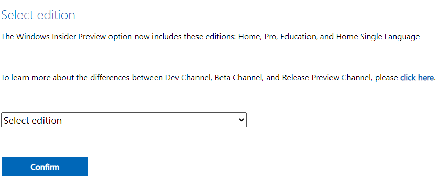
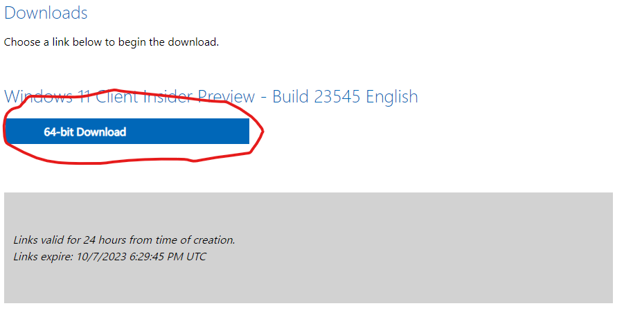

the first step is check if your pc is compatible with windows 11 by downloading
whynotwin11 and go to the one with the github link after searching under the
picture there is stable version click on it and after the download finishes open
in the downloads in chrome!
go to windows insider program link!
after going there go to register and enter your microsoft account or use this
account sample username:exampleGem@gmail.com, password:#example2@
after registering; scroll down till you see a link that says iso's and click on that
and once it loads the page scroll till you see select product or something that resembles it
after that you will go to page either login or not login so login again and go back link
scroll down till you see a dropdown
it will show a list of options so you have two options;dev and beta
dev has more options but slower and beta has less options but fast depending on your core but i recommend the dev
then choose a language and after the validation click download
third step needs a admin but if you can do it go on
first turn off your device and turn it back on
before it displays the logo click on esc as fast as you can why because the system will pause and continue again after 2sec so after the pause click again or spam it
it will show a few lists of things but you choosse f11 for hp or the corrosponding os
then boot from the iso
after that everything that comes select the positive answers
then download and configure your account and options
Warning! = your files and Activation Code will be removed but there is a page to cover that